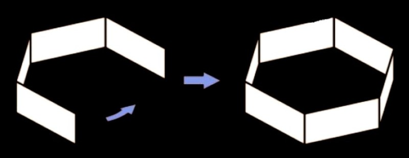

Hexayurt Construction
The Hexayurt is a simple, free, generic open source appropriate technology shelter which is designed to replace tents in many applications. Its unique feature is that it can be mass produced from a wide range of materials in simple or even improvised factories, or field-fabricated in a few hours with semi-skilled labor.
The Hexayurt is a modern adaptation of the Yurt, a tent used by nomad cultures for hundreds of years. The design of the Yurt makes it less susceptible to winds, allows it to shed rain and snow, is roomy and fairly easy to heat and cool.
A traditional Yurt is made from many yards of cloth wrapped around a wooden frame and can weigh several hundred pounds. A basic hexayurt weighs about 30 pounds when finished. Because of the shape of the Yurt / Hexayurt it does very well in moderate winds.
As air flows over the structure, it forces it down to the ground, unless of course wind gets under it, then it becomes a big kite. A well constructed Basic Hexayurt will handle 30-40 mph winds. The key feature of the Basic Hexayurt design is that it uses whole 4’ x 8’ panels, including Foam House Sheathing, plywood, OSB or even cardboard. Six panels are cut into triangles to form the roof, six more form the walls. The building is often made with strong tape and guyed like a tent.
A folding hexayurt also exists, where the entire building folds flat and can be unfolded again, ready for use. High density shipping of units is possible either by using thin, strong walls, or by shipping compressed materials (honeycombs) which are made into panels and then completed on site.
The Hexayurt is a step to regional shelter self-sufficiency. They are intended use short term use, however some Hexayurts have been in continuous use for over a year in Haiti and in several locations in Asia after the Earthquakes and Tsunamis of the last few years. They are light weight and require a minimum of tools and materials. This also means that shelters can be trucked to disaster areas rather than being air freighted. This represents a considerable saving of time and money. The design is free of all patent and copyright, permitting it to be replicated freely anywhere.
Many reasonably-priced materials are good for 3, 5 or even 20 years in the outdoors. In a refugee camp or transitional housing setting, a plywood/OSB hexayurt costing as little as $200 (1/4 the price of a delivered disaster relief tent) could be manufactured locally using local labor from construction industry workers. The more expensive folding design would allow families to take the shelter back with them when they can finally return to their lands, and keep using the shelter while they regain economic self sufficiency and repair their home.
Once the shelter is no longer needed, the tape seams are cut and the panels recycled into new construction, building repairs or even stored until they are needed again as temporary shelters.
Pre-Construction design considerations
Location; the finished Hexayurt needs a minimum flat area of 18’x18’. It should be as dry as possible, elevated to allow for water run-off, and free of rocks, broken glass and other debris. They can be erected in empty parking lots, fields, golf courses, even empty yards.
Windows; decide where you want your windows before construction, and draw the location with a marker on the panel. Do not cut them out until after the unit is assembled. Every hole you make is a place where heat comes in or escapes. A single badly-placed window can turn a Hexayurt into a solar cooker, but no windows can also get hot! The smart plan is to keep the “plug” made by cutting out the window so it can be pushed back into the window to seal out the day, like a shutter.
Cross ventilation is a must. Remember to tape all raw edges, and always seal any exposed raw panel material! You can cover windows with plastic, or bubble wrap (translucent like shower glass.) You can also leave them open. If you cut the windows as rectangles or very-slightly V-shaped rectangles, you can usually wedge the window piece back into the window at an angle and use it as a sun shade. This is a good solution. But if it’s windy one day and you left a window open, so much for your dust-proofing. The cure for this is furnace filters, which are cheap, very effective, and can be taped over windows on the outside.
You must put them on the outside, or when they fill with dust and you shake it off them, the dust falls inside your Hexayurt. Keep them on the exterior wall. Some people recommend a filter on each side of a window. Or just cut small portholes, about four or five inches round, and cover them up on the outside with overlapping strips of packing tape, it’s normally translucent. I leave the inside sticky surface exposed to act as a dust magnet. Consider the location of your door (north facing is best), and the location of your windows in relationship to the prevailing winds in your area; a cross-breeze is key in a hexayurt. The Door; decide what type of door you will use, draw and cut it out of one of the full 4’x8’ sheets, and then tape it back in place with several small pieces of tape.
If the Unit is to be used by someone with mobility problems then a door that goes all the way to the ground is recommended, otherwise a Portal Type door should be used as it results in much more strength. Everything said about windows goes double for doors. The door is the one thing that really isn’t perfect about the 6′ or 8′ Hexayurts, because the door can’t be too big and the entry height is only 4′ or less unless you use one of the extended headroom designs. The size of the door matters– the bigger the hole you cut, the more structurally unstable the wall panel becomes. A good size is two feet wide, cut one foot from the end of a wall. Some people like a door that goes from the ground to about six inches from the top of the wall. If the door doesn’t quite fit now, you can crush the door flap a little by banging it on the ground (really).
The wall panel will be sturdier if you don’t cut the door all the way to the ground– you maintain the “shear strength” of the panel this way. Cut a portal into the material, 2-3 inches up from the ground. This is a very strong door.
However, you then have a delicate piece of the panel exposed for people to trip on, step on, and crush. Screw two narrow bits of wood to either side, sandwiching the material in between to reinforce this section–that prevents injury to the panel from being stepped on– it doesn’t help with trippers. Some people have used even large pieces of plywood to sandwich their door panel in. Another way to increase strength is to have rounded corners on your door instead of square cut corners. Where you place your hinge matters too. The door should swing outward, always. Hinging the door with tape from the top like a pet door makes the door stay closed and keeps it very rainproof. A 4’ stick can be used to prop the door open when in use or for ventilation. A hinge from the side is less rainproof, and will need repair or replacement often.
Also it’s hard to guarantee that it will stay closed on its own, it may need a latch or cord to hold it closed. Don’t let your door be blown off: secure it from the outside and the inside with tape so that it cannot be ripped off the face of your yurt. Tape the outside with the door closed, then open it fully and tape the inside edge, this will create a hinge.
Remember to orient the door on the North side, otherwise your yurt will be hotter than it has to be and more subject to winds.
Consider mitering the edges of your door when you cut it out (cut it out on a diagonal angle). This way it will close easily and seal well when closed. If it’s cut out like a plug that needs to be forced closed, you will put extra strain on that panel. If a Hexayurt is being constructed for a person who is in a wheelchair, the door of course must be cut all the way to ground level. If additional foam strips are cut and used to reinforce the doorway, a double door can be used to allow easier access. Simple windproof door latch; use a short length of wood (or plastic, metal, etc) that is about a foot long, 1” thick and 2 inches wide.
You will need a short length of cord about 2 feet long, and a nut and bolt with three washers. The bolt will need to pass completely through the door and the wood, so it will need to be at least 2 ½ inches long. Drill a hole in the wood centered about 2 inches from one end. Put a washer on the bolt and insert into this hole and add a second washer. Pass the bolt through the door about ½ way up on the non-hinge side.
The end of the wood should overlap the door frame by several inches. Install your last washer and the nut on the outside of the door, hand tighten enough to hold the latch in place, but still allow it to swing freely. Tie the cord to the wood (Drill another hole if you want) and then drill a second hole in the door above the wood latch and pass the cord through. When the cord is pulled from the outside, it should pull the latch up enough to clear the door frame and allow the door to open. A large knot on the end of the cord will keep it from being pulled out of the door.
Heating, Cooling and Cooking
In many areas heat is a major consideration for any dwelling. Because of the R Value (insulating) of the foam sheets a Hexayurt is fairly easy to heat in moderate to cold climates. The normal body heat of 4 adults inside a closed Hexayurt will give an average inside temperature of 55 degs F when the outside temperature is 35 degs F. Because most if not all products that a hexayurt can be constructed from are Flammable, serious consideration should be given to any heat source used.
The 1” foam panels are listed as “Fire Resistant” but they will still burn or melt. If at all possible, a static heat source should only be used in the very center of the Hexayurt, if possible dig a hole in the center at least 12 inches deep and limit the heat source to that hole. Fire is the least desirable heat source, but in many instances it may be the only option. An empty #10 can (coffee can) can be used to contain the fire, can also be used for cooking, and will provide plenty of heat to an insulted Hexayurt. If any type of heat source is used inside, a vent hole should be cut into the center of the roof panels.
The edges should be taped, and additional foil tape applied on the inside for at least 12” down each side from the opening. If you really want to get creative, cut the tips of the roof panels to form your vent hole and tape the exposed edges. Take three of the cut off tips and re-tape them in place pointing straight up, a rain cap can then be placed over the tips to keep any rain or snow out. No matter what heat source is used, it must be kept at least 4 feet from any inside surface. Small “Buddy Burners”, compact propane stoves, chemical heaters and even a few candles are other viable heating options. Cooking if at all possible should be limited to outside the Hexayurt, if it must be done inside, one of the above heating options can be used.
Cooling the Hexayurt can normally be done by just opening a window and the door, creating cross ventilation. If the building must remain sealed due to rain, wind, or other reasons, a small water sprayer misted into the air every few minutes will cool those inside due to evaporation. The reflective surface of the Mylar will reflect most sunlight
away from the inside of the unit and provides a waterproof layer. In some areas, in the winter, the Hexayurt can be constructed “Inside out” with the reflective surface inside to reflect any heat back in.
If this is the case, the outside should be covered with a dark plastic for waterproofing and to help absorb heat from the sun during the day. If the panels used have a clear plastic facing on the opposite side from the Mylar, it can be used as is, or even the top roof panels spray painted with a suitable dark colored paint. When the weather changes, if the unit is still being used, it will only take a few hours to take the unit apart and reassemble it with the Mylar facing out.
The floor of the Hexayurt can be as simple as the spot where it is setup. If this is a grass yard or field, it should be suitable for short term use. In most cases a waterproof floor of some type should be considered. The easy method is to take a 18’x20’ tarp (the closest commercial size) and cut it to fit inside your Hexayurt. An easy way to get a perfect fit is to take your finished roof and lay it on your unfolded tarp. Use a board or straight edge to extend the dimensions of the roof by 4 to 6 inches. Cut the tarp along these lines, save the scraps for a rain cap, window flaps, etc.
When the unit is fully assembled, carry the rolled up tarp inside and unroll it. The edges should overlap the inside bottom edge of the walls by several inches, and can be taped in place. If a fire pit is used, the center of the tarp can be cut in a star pattern, and the edges folded back out the way. A small ring of small stones or bricks will hold this edge tight. Extra blankets, moving blankets, old towels, carpet scraps etc can be used to cover the floor over the tarp. If possible, shoes should not be worn inside this will reduce the wear on the floor and maintain its waterproofing considerably. A mat or small rug just inside the door gives a place for people to remove or put on
shoes when entering or leaving. This will also go along way to reducing dirt, mud and dust inside the unit.
In areas with high water, heavy rain or melting snow, a layer(s) of sandbags under the tarp will keep most water out of the unit and everything inside dry. In some cases of flooding, hexayurts have been built on as many as 4 layers of sandbags, raising the unit over 18 inches off the ground. Additional sandbags can be arranged to make steps at the door if needed.
Lighting
Flashlights, chemical light sticks, and battery powered lanterns can all be used safely. A gas lantern used at ground level in the center will provide plenty of light, and will also provide a surprising amount of heat. A good way to light the inside during the day (besides opening the windows) is a “Bottle Bulb”.
Take a clean clear soda bottle, remove the label and fill it completely full with water and replace the cap. Cut a hole in the roof just large enough for the top tapered portion of the bottle to be pressed into. Use a layer of tape around the top to secure it and waterproof the hole. Up to a 1 liter soda bottle can be used for this without placing undue stain on the roof. Tape; if foam panels are the brick of the Hexayurt, then tape is the mortar.
Many different kinds of tape have been tried and tested. The basic requirements are that it must be easy to apply, ie not need special heat guns or water to activate the adhesive. It must be water and wind proof after it is applied. It must be strong and able to withstand a reasonable amount of stress. And last, it needs to be able to be cut with a standard knife, or torn by hand. Of those tested, the most popular is Aluminum Foil tape, otherwise known as HVAC Tape or simply Foil Tape. It is commonly sold in hardware and building supply stores in rolls that are 2” wide and 50 yards (150 feet) long. It has a peel away backing to protect the adhesive that makes application much easier for two persons.
About 80% of the Hexayurts currently in use are constructed with this type of tape. It is also available in rolls that are 2.5” wide that makes some of the outside wall corner seams more durable, but it is also about twice the cost of the 2” rolls. One important thing to note about using 2” wide tape, several layers maybe be needed on the outside corner seams to provide strength.
A single layer that covers both ends of the panel, and two more additional layers over the ends of this layer to help secure it in place and provide waterproofing.
Several companies make a packaging tape known as bi-directional filament tape, and this is available normally by mail order. This tape is very strong, it is waterproof and will bond to wood or foam and can be ordered in widths up to 6 inches. However it is 2-3 times the cost of the Foil tape, and it is very flammable, so it must be covered with
Foil tape after application. For units that will see long term usage however it may be worth the investment.
The old handyman’s standby Duct Tape (the cloth backed kind, not the vinyl commercial version sold as Duck Tape) will work for limited usage in drier climates, however it will not hold up well in rain or cold temperatures. A viable alternative is a newer product called Gorilla Tape (trademarked name). This is an improved version of Duct Tape that has a much stronger waterproof adhesive, is UV protected (Duct Tape will break down in sunlight) and stronger cloth backing. It can be found in most hardware and building supply stores in rolls 2” wide by 35yds long. It does cost more however. (Foil tape averages about 5 cents a foot; Gorilla Tape averages about 10 cents a foot). This may be something to consider using however to strengthen high stress areas, or to make repairs to Hexayurts that have been in use or have been damaged. Another idea is to use Gorilla Tape for the inner layers and joints, and then cover that layer with overlapping layers of the Foil Tape.
Update 06/2012: Gorilla Tape is now making a new 2.88” wide version sold as “Tough and Wide Gorilla Tape”. So far I have only found this available online, and runs about $15.00 for a 30 yd long roll. This would be much better for the outer seams of a Hexayurt then the 2” tapes. About 7 rolls would be needed if you were to use this for the whole structure. (about 17 cents a foot average cost) If you are just using it for the outer angled seams, then one 30 yard roll will be plenty. (the cheaper 2” wide tape can be used for the flat seams and inner seams).
Children can be one of the hardest impacted by any type of disaster, and having to relocate to an improvised or temporary shelter will make them all the more harder to deal with. Families with children should be warned in advance of the nature of the Hexayurt building and considerations and limitations of living in same. Poking holes, running into walls, space limits, throwing toys around, etc are all things that could reduce the life span or destroy a foam panel Hexayurt in a very short time.
Basic Hexayurt Instructions
(The following instructions assume the use of 1” thick sheets of Mylar faced foam insulating panels, such as Thermax HD (Dow), Tuff-R (Dow), or EPS (Corning/Lowes) steps may need to be adjusted when other types of materials are used)
1. Take the six panels which will be used for the roof cone.
2. Draw a diagonal line, left to right, corner to corner, on three of the panels using the ruler or another panel as a guide. (this ensures that the shiny side is always out)
3. Draw a diagonal line, right to left, on another three panels. (this ensures that the shiny side is always out)
4. Put on your gloves, mask and goggles. This protects you from little bits of fiberglass from the panels, if the foam panels being used have such reinforcement.
5. Using the craft knife, cut the panels. Change the blade as soon as you feel the knife tearing the material rather than cutting cleanly.
6. You now have 12 right angle triangles and 6 full wall panels.
7. Tape the edges of the triangles. If you are in a area with little to no rain then you can just tape the stressed areas of the triangles and wall panels, if however you are likely to get rain or snow, or the Hexayurt may be used for a long period, then tape ALL the edges.
The best way of doing this is to start the tape about 6″ from the point of the triangle, and then have one person run the tape down the edge of the triangle while another person holds the triangle in place. The tape needs to be smooth and even. Once the tape is all the way down the edge, fold the tape down on to the sides of the board smoothly. Then rotate the board and do the next side. If you are going to have a center vent hole, cut the tips of the triangles off using a sharp knife.
Make sure the cuts are even and the same size on all of the triangles. (See chapter below on heating to decide if you need a vent hole. If you do cut them, do so before taping the edges).
8. Now do the same for the 6 boards you are using for the walls. Regardless of what kind of tape you use for final assembly, the 2” foil tape should be used to seal the panel edges. If using 1” wide panels, this will give you a full 1” across the exposed foam ends, with a ½” overlap on each side.
9. You have now completed the first stage of panel preparation.
10. Lay your Roof panels out, shiny side down. Start by matching two 8’ edges, the 4’ edges should form a straight line 8’ long. Tape the center seam for its full length. Do this for all the pairs of triangles. This will give you 6 triangle roof panels.
11. Arrange the kite shapes edge to edge and tape the seam for its full length. As you pull the final edges together, the roof will no longer be flat, but rather will be pulled into a bowl shape. Carefully tape this final seam. Leaving one panel flat on the ground, have two people support the sides while another carefully crawls inside to tape the open seams. Turn the roof over so the edges are flat, and tape any remaining exposed edges or seams.
12. Lay out your wall panels. You will notice there is no door, nor are their windows. You should cut a door now. The strongest door is two feet wide, cut one foot from the end of a wall. It should go from the ground to about six inches from the top of the wall. Cut the section out completely, and tape all exposed edges. If the door doesn’t quite fit now, you can crush the door flap a little by banging it on the ground (really.) Then tape the top edge of the door into a hinge, like a cat flap. This is not the most convenient or aesthetically
pleasing door. See the “Doors” and “Windows” section for other ideas. Draw the window locations with a magic marker, but do not cut them yet.
13. Tape the door back into place in the panel in such a way that you can cut it open from the outside. If you do not do this, the panel may break above the door in transit or construction.
14. Lay 3 wall panels side by side, 4’ edges adjoining. Tape these seams. Do the same for the other 3 wall panels. Stand the wall panels up and tape the two remaining seams. (at this time the tape should all be on the inside.

15. Using as many people as you can get, lift the roof onto the wall sections and carefully align the bottom edges of the roof with the top edges of the walls. Tape the Roof/wall seams (along the 8’ edges) to secure the Hexayurt into its final shape. Tape any remaining exposed seams both inside and out.
16. Make your Rope Halo and secure the Hexayurt to the ground. Securing the Hexayurt to the ground is fairly simple and straight forward. The quickest and easiest method is to make a loop of rope about 24 feet in circumference. Before the ends are knotted to form the loop, take 3 or 4 (3 will work in most areas, more is better) lengths of rope about 10 feet long and form a Sliding Loop in one end and an Adjustable Hitch in the other.

Thread the long rope through the loops, allowing them to slide freely along the length of the rope. Knot (Square Knot) the ends to form your loop (sometimes called a Hexayurt Halo) and toss it over the center point of your roof. Pull on the guy lines to center the loop, and allow the guy lines to fall over the sides on each side except the wall that has your door. If using 3 guy lines, they should start on the wall to the right of the Door panel, skip the next panel, etc.
Pound in your tent pegs and secure the guy lines, slowly tighten each one until there is even pressure on each line, and each line is tight. Too much pressure can damage the foam panels of the roof, a 12’ square of heavy cloth or plastic between the guy lines and roof corners will extend the life of the unit considerably.
Square Knot Sliding Loop Adjustable Hitch
17. Unroll and install your floor by taping the edges of the cut tarp to the inside bottom edge of the walls. (Optional) Another option for securing the walls is to use lengths of scrap lumber and screw or nail them along the bottom edge with washers on the panel side. These could be placed on the inside or out. A 6 foot long piece of 2×4 lumber secured along the bottom edge of each wall, and holes drilled every few feet can be pinned to the ground with large spikes, nails, gutter spikes, or even short lengths of Rebar.
Roofing nails and screws typically come with a washer pre-installed and are common in lengths up to 2” long. For even more durability use a 2×4 along the outside of the bottom of the wall, backed by a 1×4 along the inner bottom edge of the wall. The inside board should be flush on the wall with the 4” side, the 2×4 outside would be flat with the 4” side on the ground.
Cut and Assembly plan of the Basic Hexayurt
Materials needed per unit:
- 12 sheets of 4 foot by 8 foot, 1 inch thick Mylar (silver foil) faced insulation.
- If using 2” wide x 50 yd rolls, 4 rolls of foil Tape. OR
- If using 6” wide tape, then 2 rolls plus two rolls of 2” foil tape OR
- If using Gorilla Tape, then 3 rolls plus one roll of 2” foil tape
- 100 ft of Nylon cord, tape, ribbon or Rope.
- 3 or 4 Tent pegs
- Optional, but recommended; 18×20 foot plastic tarp for Floor and 48 feet of tape for securing same.
Tools Needed
- Sharp knife, a “craft knife” or Box cutter with replaceable blades is preferred. It needs to have at least a 1” cutting edge. (One is ok, more is preferred; one for each person cutting panels, and one for each person taping.)
- 3 Foot Ruler (measuring and marking doors and windows)
- Magic Marker (marking panels, doors and windows)
- 8 foot straight edge (a straight board can be used, or a chalk line will also work, as a last resort a 20 foot length of string and your magic marker can be used)
- Hammer or mallet for Tent Pegs
- Small Shovel (leveling ground under and around the walls, and digging a fire pit if used)
Note: If using the string method to measure your panels for cutting, try this; (you will need three people to do this correctly). Double the string and have one person hold each end. Place the doubled string on opposite corners and pull it tight as possible. The center of the doubled strings should be over the point of the corners. The third person carefully runs the point of the magic marker between the strings marking the panel for cutting.
Example cost (based on current retail price at Lowes of Seneca, SC, prices current as of 12/15/2011)
- 12 Sheets of 1”x4’x8’ Expanded Polystyrene Insulation board, @ $13.62 each, $163.44
- 4 Rolls of 2”x50 Yards Foil Tape (sold as HVAC Tape) @ $7.58 each, $30.32
- Package of Tent pegs, $1.99 (package of 4)
- 100 ft of ¼ inch Nylon Rope, $3.96
- Optional Tarp for floor, $16.99
Total cost, $216.70 plus state sales tax $13.01 (Total $229.71)
This will yield a wind and water proof Hexayurt that is 16’ wide, 8’ tall at center peek, and can comfortably sleep 4-5 adults, plus store food, clothes, etc.
Hexayurt City constructed and used for over 30 days during a summer gathering in the Midwest desert. May 2010. These were constructed in large numbers and assembled onsite. Doors have not been installed yet. (move in phase) Because of the dry nature of this area, full tarps were used for the floor to reduce dust.
Hexayurt built and used as shelter, complete with floor and has a portable air conditioner added. Note door goes all the way to ground level.
Other Hexayurt Design Options
As shown in the graphics below, many design options can be incorporated into the Basic Hexayurt. These include; extended headroom, more usable space, joining two or more hexayurts into a single unit, half size Hexayurts, etc. The basic construction and assembly procedures remain the same. These modifications will require fewer or additional Panels and tape and the additional cost vs the need weighed carefully.
Rooms
This one is easy. From the corner of the Hexayurt to the center is eight feet. The wall is four feet high. The point of the roof is eight feet high. So a whole 4′ x 8′ sheet, laid on its side, from the corner to the center of the Hexayurt divides the space perfectly up to 4′ in height. The remaining space above the wall is 8′ long by 4′ high at the point, in short, it is half of a 4′ x 8′ board. So for three extra boards, one of which is cut in half, you get the ability to divide the hexayurt internally into rooms, either 1/6th, 1/3rd or 1/2 of the hexayurt in size. You could even divide the hexayurt into six small bedrooms with their doors on the outside if you liked. They would be small, but it would average fifty bucks or so each.
Extended interior space
A hexayurt with 6’ high outside walls can be made by adding a 2’x8’ panel (a full sheet cut down the center lengthwise) to each wall panel. They should be alternated top and bottom for strength. (Requires 3 additional sheets and 96’ of tape) A Hexayurt with 8’ high walls can be made by using two full 4’x8’ sheets per wall. They should orientated so the 8’ side runs vertically. (Requires 6 additional sheets and 120’ of tape).
Stretch Hexayurts can be made by extending one or more wall panels and the adjoining roof panel. See designs. These can be useful for Food preparation and dining areas, medical use, logistic staff areas, etc. Several units can be joined to make a multi-room unit. The unit shown at left was used as an informational and registration office for the Burning Man Festival in 2007.
It was modified to include a full size door and extended headroom inside, informational posters and notices are mounted on outside walls. A closed small window can be seen to the right of the poster.
Joining two or more Hexayurts; Assemble two basic Hexayurts (or extended versions thereof), however only use enough tape on one of the split roof panels to hold it in place during construction. Join the two units together at a common wall, and then tape the outside seam. Remove the joined wall panels from the inside. (If you have enough people during construction these walls can be omitted completely during assembly.)
Cut the center tape only on the adjoining roof panels and carefully fold them upright. The 4’ long edges of the roof panels should be vertical and can be taped together. Use the panels removed from the walls and cut them corner to corner just as you did with the roof panels, join them along the 8’ side, and then tape them in place in the remaining roof gap. You will end up with a slight overhang, this can be removed at this time. If done carefully and correctly, you should end up with a slightly sloped flat roof in the center of the two Hexayurts.
The 6’ Hexayurt (shown lower right, top picture) is suitable for a single person, if it is built with 8 foot walls can be used for an outhouse (chemical or composting toilet), wash area (with proper drainage for water runoff), checkpoint or Security building, etc.
Rear view of 8’ Hexayurt with 4’ walls, extended head room and overhang over entry / exit. Two such units can be joined for a two room unit with covered outside cooking area. Three units could be joined for a multiple room family “clover leaf” unit. Each unit requires 10 4’x8’ sheets, so a two room unit would need 20 sheets, a enclosed 3 room unit would need 30. On the one and two room units, the large openings can be covered with tarps, screening, or even scraps of sheets cut to size. Adding a 2’x8’ strip along the bottom of each wall section (2 additional sheets per unit) would give you 6’ high walls and 12’ at the peak of each unit.
The “Pup” Hexayurt and other useful projects
The “Pup” Hexayurt can be used as a small animal shelter, storage area, or even a small human shelter for short term lodging. If it is made from a single 4’x8’ sheet, it will have an opening 2’x2’ on one wall. If you use two sheets this can be enclosed and a extended portion used that will give as much if not more room then a one person nylon tent.
If using two sheets, cut the second the same as you did in step one above. Use the long edges to make a three sided box, 2’ high and 4’ long, and tape to the opening of the “Pup”. The remaining piece is cut in half to make a door.(you will have a 2’x2’ square left over).
Outhouse, shower building or common Phone use building
Using the design for the “Pup” shown above, if the wall panels are extended to a 6’ or 8’ high length, the building Can be used as an outhouse for a chemical or composing toilet, a Shower building for a solar shower (water tank would be supported on a separate structure, and a wood or plastic pallet on the ground for water drainage, a run off trench directs waste water to a safe area.) On a shower unit, the roof is normally left off unless it will be used during cold conditions. A solar shower unit can be suspended from a tree limb, and the unit assembled under it. If a central communications area is provided for refugees or other group, this building, or a larger half size Hexayurt with 8’ high walls works nicely. The walls of such a unit also make a good place for posting informational notices, alerts and schedules.
The Teepee and Pyramid Buildings
Using the same building materials and construction methods used on the above projects, another type of useful building designs are the 3 sided Teepee and the 4 sided Pyramid.
These units do not make the most efficient use of materials but they are simple enough and compact enough that they can be built by a single person in just a few hours. Both units are made the same way, the Teepee uses 7 sheets of 4×8 siding, the Pyramid uses 10 (9 if a vent is added.)
Cut and assemble the sheets as shown below. The normal style doors, windows and other features of the Hexayurt can be added as needed.
If making a Pyramid remember to cut two sheets left to right and two sheets right to left. (So the silver side is facing outwards on all panels).
Doors and windows should be cut from the full sheet sections if possible. Hinge should be towards the top or inner section. All doors and windows should have beveled edges and open outward.
Cut small vent in point of cap before assembly if needed. Open vents can be covered with window screen. Once the wall units are finished and assembled, the cap can be placed on top and all seams taped, inside and out. A 12’ x 12’ heavy tarp is a perfect fit for a 4 sided Pyramid floor, or it can be cut down to fit the 3 sided Teepee. If you cut the sheet as shown above and leave the 4 triangles full size you should end up with triangles with a 4’ wide base, 3 ½’ from center peak to base and 4’ sides.
The sides can arrangement can be varied; one side left off for a large vent,, etc. See picture below for peak cap suggestions. The ½ triangles (sides 4’x2’x3 ½’) can be used to make these options. The cap regardless of design should only take one sheet or less.
A Teepee constructed from 4’x8’ sections will result in a unit 12’ wide at the base, 7’ tall at the lower edge of the cap, and 10’ at the peak.
A Pyramid constructed from 4’x8’ sections will result in a square unit 12’ wide at the base, 7’ tall at the lower edge of the cap, and 10’ at the peak. These units shed water and light snow very well, and with an approved heat source are suitable for short term use in cold climates.
Supplemental #1; Heating, Cooking and Lighting
Heating and Cooking
If at all possible, a flameless heat source should be used inside the Hexayurt. However due to available materials, climate and weather conditions, etc, there maybe times when an inside heat source is needed. Any inside heat source will require that a vent be cut in the center of the roof. The easiest way to due this is to cut off the point of one of the
roof pieces and tape the exposed edges. This cut off piece can be reattached with a tape hinge so that it could be closed again in times of heavy rain when the heat source is not being used.
If you have a tarp, carpet or any other type of floor other then dirt, then it must be protected from the heat source. If you are using a free standing heater such as a Kerosene Heater, flameless propane heater, etc a layer of sand, bricks, stones or other non-flammable material will work. If you have to resort to using fire as a heat source, then a Fire Pit must be dug. The preferable location is in the center of the Hexayurt as far away from the walls and roof as possible. The fire MUST be kept small and watched at ALL times. This means having someone on fire watch all night when it is in use. Below is a side view of a proper fire pit.
The fire should not be directly in the pit; rather a contained stove or heat source is placed in the pit. A simple idea is to use what is commonly referred to as a Hobo stove. This is a metal can, (coffee can, soup can, etc) that has vents cut in the sides both top and bottom. Small pieces of wood, or even Bar-B-Que briquettes can be used, and a pot, pot lid or even a scrap of metal screen used to cover the top and arrest any stray sparks.
This can also be used to cook and heat food if outside cooking is not possible. The fire should be kept as small as possible, and at no time allow the fuel source to rise above the top of the stove.
Other sources for heat and cooking inside are Gelled Paraffin stoves, (commonly called Sterno or Buffet Heating Stoves. These are available rather cheaply as Military Surplus or in camping and Restaurant supply stores.
While the most time consuming, one of the oldest and safest ways to heat the Hexayurt dates back thousands of years, the Hot Rock. Fairly large rocks are heated outside in a fire (located a safe distance from the Hexayurt) and then carried inside and placed on a suitability heat resistant base.
A small pile of dry sand will work if nothing else is available. Heavy fire resistant gloves (like welders’ gloves) or metal tongs must be used to transport the heated rocks inside. Be aware that some rocks may crack or even explode the first time they are heated or when wet. Bricks can also be used in place of rocks in this manner and are somewhat easier to transport back and forth.
Lighting
Suitable lighting inside the Hexayurt can be accomplished in many ways. Hopefully you have installed windows during your construction, and these will be the primary light source during the day. Another source for lighting during the day light hours that requires zero up keep once properly installed is the Solar Bulb or Solar Bottle Bulb.
Obtain a clean, clear plastic soda or water bottle. Remove the label and fill with clean water. You will need to cut a hole in one of the roof panels, slightly smaller then the diameter of the bottle. Location depends on where the light is needed, but closer to the walls is preferable. Press the bottle into your hole with the cap facing outside, and seal the edges with tape or silicone. Pictures below show a bottle installed in a segment of Roof panel. Bottle neck should be a tight press fit in the hole.
Another option when available is to use the inexpensive Solar Lights sold for lighting walk ways, drive ways etc. These typically are found with the small solar panel on top, surrounded by a flange and the battery and light beneath.
Most have a removable mounting post at the base. (If not removable they can be cut off) Cut a hole in your roof panel that will allow the light to be inserted inside, but allows the outer flange to rest on the upper surface. Seal the edge of the flange with tape or Silicone. This will give you a limited night time light (most will produce light for 6 hrs or so after dark. When using these lights for day time lighting, cover the light detecting sensor with a small piece of tape. These lights if available in quantity can also be handy for marking guy lines, doors, paths to out houses, etc.

Other sources for lighting include Flashlights, Chemical Light Sticks, LED Lights, and as a last resort, Propane camping lanterns or old fashioned Oil Lamps. When using the last two types the same cautions and dangers regarding fire and sparks apply as with heating sources.give you a limited night time
Supplemental #2; Alternative ways to secure the Hexayurt to the ground.
While the Rope Halo already discussed is the quickest and easiest way to secure the Hexayurt to the ground, it is by no means the most secure and will most likely require daily adjustment and tightening.
Other more secure methods can be employed after the basic construction is finished. These include the Rope Anchor and the Lumber Frame, however both require additional materials that may or may not be readily available.
Rope Anchors
The Rope Anchor is a short length of tubing or pipe, PVC being the most common, that is taped to the edge of the Hexayurt where the walls and roof join. Depending on what tape you have available, it can either be taped directly to the Hexayurt, or tape can be looped over the pipe and allowed to hang freely over the side. A length of rope is then passed through the pipe and each end secured to the ground with stakes, or tied to trees, cinder blocks, etc. If possible, the tape should be looped over the pipe and at least 6 inches folded back on itself (sticky side to sticky side) with another 12 inches or more of tape attached to the edge of the Hexayurt.
Rope Anchors are spaced at least every 4 feet along the roof edge, however more can be used as wind and weather conditions dictate. Ropes can be single ended as shown above, or passed through the pipe and each end secured to the ground. Make sure when planning and laying out your Hexayurt that Doors and windows are not placed directly under a Rope Anchor or staking rope.
Securing the bottom edge of the Hexayurt with Lumber / Securing the Flooring
One of the most secure and least trip hazard forming ways to secure the Hexayurt to the ground is to use scraps of lumber. Common 2×4’s on the outside will work fine. Start by drilling several holes in the 4” side of the 2×4 spaced a few feet apart. These holes must be large enough to allow the shaft of your stake to pass through, but not the head of the stake. If using Gutter spikes, make the holes just slightly larger then the diameter of the shaft. Outside view of wall with 2×4 along the bottom edge. Note pre-drilled holes for ground stakes.
These lengths of 2×4 can be anything from a few feet long to a full 8 foot length, use whatever is available and as the wind and weather conditions dictate. Place the 2×4’s along the outside bottom edge of your walls and secure them to the walls using either more wood scraps inside, or by reinforcing the inner side of the wall with tape and using large washers and screws passing through the foam walls into the 2×4’s on the outside.
Inside view of the bottom of the wall, left the 2×4 has been screwed to the wall using scrap lumber to reinforce the back side, right the wall has been reinforced with tape and a large washer used with the screw.
If you are using this method to secure your walls and are using a board both inside and out, a tarp for the floor can be sandwiched between the inner board and the wall. Allow extra length to the edges of your tarp before cutting if you are planning to do this. If you are using just a washer and screw then the tarp can be taped in place as you would if using the Rope Halo or other exterior methods.
The Sunken Floor
In certain instances, and given the proper conditions a sunken floor makes sense and can add much needed head room and insulating value. The ground must be fairly dry and stable. The location must be high enough to assure proper water run off on the outside. The water table must be low enough that you don’t dig down into it and that it does not rise above the level of your floor during heavy soaking rains.
While labor intensive, a sunken floor can be done over a period of time after the rest of the construction is finished (except the floor of course) by removing manageable
amounts of dirt each day. Below is a cross section view of a Hexayurt with a sunken floor. Notice the rain flap that has been added to the outer walls to assure proper water run off away from the structure. Once the sunken floor has been completed, the floor can be covered with tarps, plastic sheeting, even old sheets and blankets. It is suggested that any bedding be placed on top of plastic sheets or even piles of dry pine straw will work. Allow at least a 6 inch inner edge from the walls to the start of the sunken floor.

If you would like information on hosting a class to learn to build Hexayurts (upstate South Carolina Only at this time) or have questions or comments about this publication please contact:
George Fisher
george@gunconsultation.com
(864) 643-4491 (before 6pm EST)
This class can also be used as a Team building exercise for your business or group while at the same time providing valuable knowledge that can be used to assist the local community and save lives during times of crisis or natural disaster.
Version 07.12.02
The Hexayurt Concept, Design and Construction
Original Concept by Vinay Gupta
This manual written and compiled by George N. Fisher, 2011
Updates 02/2012, 05/2012, 07/2012
07/2012 Supplemental 1 &2 added


{kind=link}